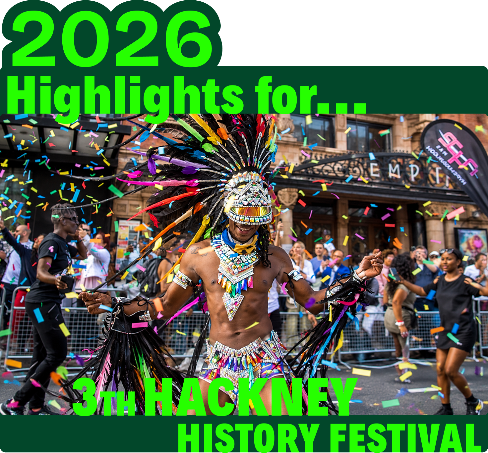
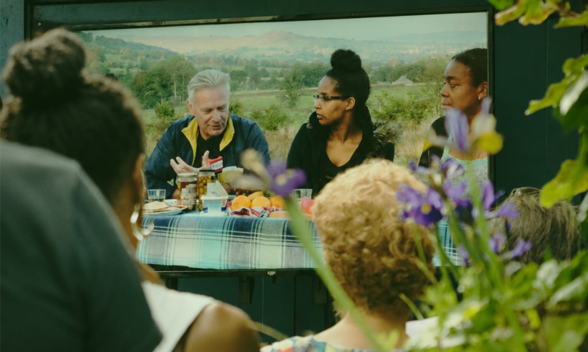
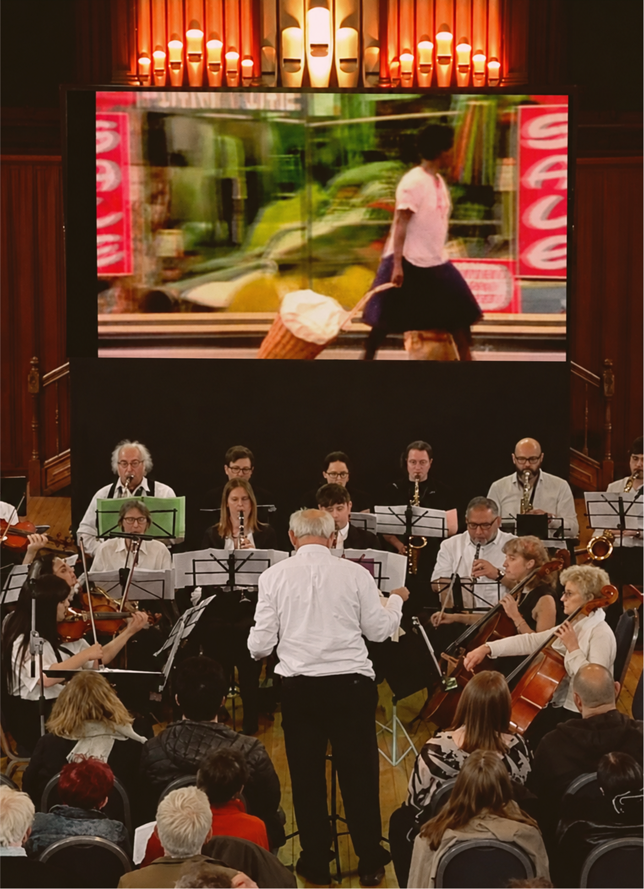
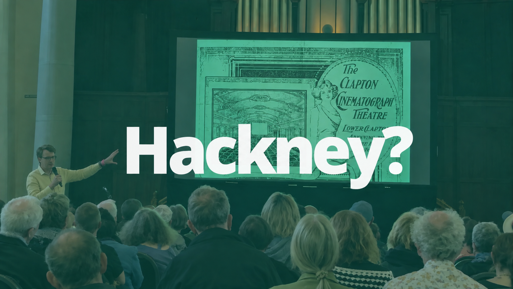

4th Hackney History Festival
Returns in May 2027!
Hackney Archives
Sutton House
Round Chapel
Chat’s Palace
SATELLITE EVENTS THROUGHOUT MAY

113
EVENTS
Across the borough

43 TALKS
22 WALKS
29 GUIDED TOURS
FILM SCREENINGS5
MUSICAL EVENTS3
3,208
TICKETS ISSUED
Throughout May, talks, walks, exhibitions and community events brought Hackney’s stories to life across the borough.

Hackney History Festival 2026 brought together historians, archivists, speakers, volunteers and local communities to explore, share and celebrate Hackney’s rich and diverse history.
Hackney’s history belongs to all of us
FESTIVAL ON SCREEN
Hackney History
on YouTube
Recordings from this and previous years are being put on our YouTube channel.
SUBSCRIBE